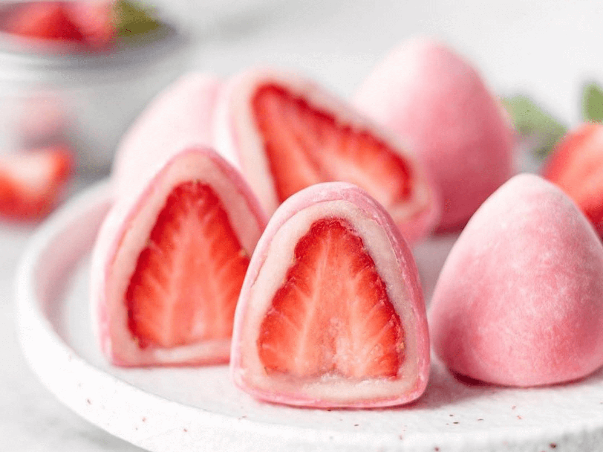

STRAWBERRRY MOCHI ICE CREAM

RESEP:
Mochi
- 150 gram Tepung Ketan
- 210 ml Susu UHT Rasa Strawberry
- 3 sdm Gula Pasir
- 3 sdm Minyak Sayur
- Tepung Maizena secukupnya
Isian
- 200 gram Whip Cream Bubuk Instan
- 400 ml air es
- Buah Strawberry
|
CARA MEMBUAT:
- Masukan tepung ketan dan susu strawberry kedalam wadah lalu aduk hingga merata
- Tambahkan gula pasir dan minyak kedalam wadah tersebut lalu aduk kembali hingga merata, tutup wadah menggunakan plastik wrap agar saat dikukus tidak ada uap air yang masuk kedalam adonan
- Kemudian kukus adonan selama kurang lebih 30 menit
- Siapkan wajan lalu sangrai tepung maizena sekitar 5 menit dengan api kecil
- Siapkan mixer untuk membuat whip cream, masukan whip cream dan air es kedalam wadah mixer kemudian mix hingga menjadi cream
- Whip cream yang sudah jadi dimasukkan kedalam piping bag atau plastik dan disimpan kedalam freezer selama kurang lebih 10 menit
- Uleni adonan mochi yang sudah dikukus dengan tepung maizena, bentuk bulat mochi lalu tekan hingga pipih
- Masukan whip cream dan buah strawberry kedalam mochi
- Ratakan dan rapihkan isian mochi hingga seluruh isian dapat tertutup adonan dengan sempurna.
- Strawberry mochi ice cream siap disajikan, kamu bisa menambahkan ice cream saat menyantapnya!
|